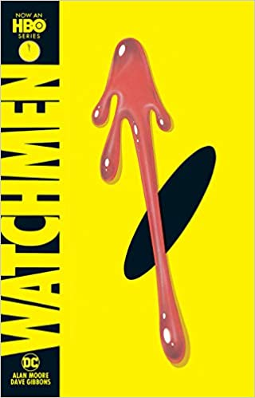

| BOOK NAME |
IMAGE |
AUTHOR |
ABOUT THE BOOK |
| The Adventures of Tintin |
 |
Georges Remi |
The Adventures of Tintin is a series of 24 Franco-Belgian comics created by Belgian cartoonist Georges Remi, who wrote under the pen name Hergé. The series was one of the most popular European comics of the 20th century. By 2007, a century after Hergé's birth in 1907, Tintin had been published in more than 70 languages with sales of more than 200 million copies, and had been adapted for radio, television, theatre and film.
The series has been admired for its clean, expressive drawings in Hergé's signature ("clear line") style. Its well-researched plots straddle the action-adventure and mystery genres and draw upon themes of politics, history, culture and technology, offset by moments of slapstick comedy. |
| Nonte Fonte |
 |
Narayan Debnath |
Nonte Phonte(নন্টে ফন্টে), is a Bengali comic-strip (and later comic book) creation in 1969 by Narayan Debnath, which originally was serialized for the children's monthly magazine Kishore Bharati. The stories featuring in the comic strips focus on the trivial lives of the title characters, Nonte and Phonte, along with a school-senior, Keltuda, and their boarding school Superintendent. The comics have appeared in book form and have been recreated since 2002 in colour. A popular animation series based on the characters has also been filmed. |
| Bantul The Great |
 |
Narayan Debnath |
Batul, Bantul, Batul the Great, or Bantul the Great (বাঁটুল দি গ্রেট) is a popular Bengali comic strip character created by Narayan Debnath. It was inspired by the famous comics character Desperate Dan drawn by Dudley D. Watkins. It first appeared and still appears in a children's magazine called Shuktara and is widely read, not only by children but by adults as well. It has since appeared in comic book format and as an animation series. |
| Chacha Chaudhary Football World Cup |
 |
Pran Kumar Sharma |
Maurice Horn, the editor of World Encyclopedia of Comics, has described cartoonist PRAN as Walt Disney of India. Entertaining generation after generation, his comics have been constant companion of all the growing youngsters providing fun and amusement through his famous characters like CHACHA CHAUDHARY, SABU, SHRIMATIJI, PINKI, BILLOO, RAMAN etc. More than 600 of his titles are selling well in the market, and numerous comic strips are regularly appearing in various newspapers. His CHACHA CHAUDHARY comics had already been adapted for a TV Serial, and ran continuously for 600 episodes on a premier channel.
Travelling widely over the globe, he delivers lectures at various International Conferences. He has also been honoured with 'People of The Year Award' by Limca Book of Records for popularizing comics. His comic book 'United We Stand' was released in 1983 by the then Prime Minister Mrs. Indira Gandhi, and is still very popular among children. |
| Watchmen |
 |
Dave Gibbons |
A hit HBO original series, Watchmen, the groundbreaking series from award-winning author Alan Moore, presents a world where the mere presence of American superheroes changed history--the U.S. won the Vietnam War, Nixon is still president, and the Cold War is in full effect. Considered the greatest graphic novel in the history of the medium, the Hugo Award-winning story chronicles the fall from grace of a group of superheroes plagued by all-too-human failings. Along the way, the concept of the superhero is dissected as an unknown assassin stalks the erstwhile heroes. |